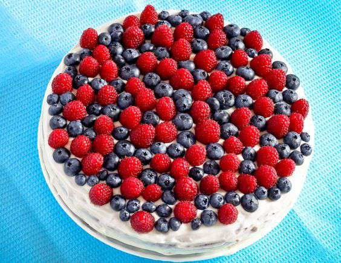

Ингредиенты:
- Мука
- Яйцо
- Сахар
- Растительное масло
- Сливки 33%
- Ежевика
- Клубника
- Сахарная пудра
Способ приготовления:
1.Белки отделить от желтков. В желтки добавить разрыхлитель, уксус и отставить подниматься. 2.Белки взбить в жесткую пену. Постепенно добавить сахар и взбивать до его полного растворения. 3.Духовку разогреть до 180 °С. Желтки смешать с белками. 4.Добавить муку, масло и все перемешать. 5.Готовую массу перелить в форму среднего размера и выпекать в духовке 50-60 минут. 6.Персики нарезать полосками. 7.Сливки взбить с сахарной пудрой. 8.Готовый бисквит остудить и разрезать на 3 части. На каждую из них нанести слой взбитых сливок и сверху распределить персики. Уложить одну часть на другую и все смазать вокруг взбитыми сливками. 9.Сверху торт украсить ягодами ежевики и клубники или любыми другими фруктами по желанию.
